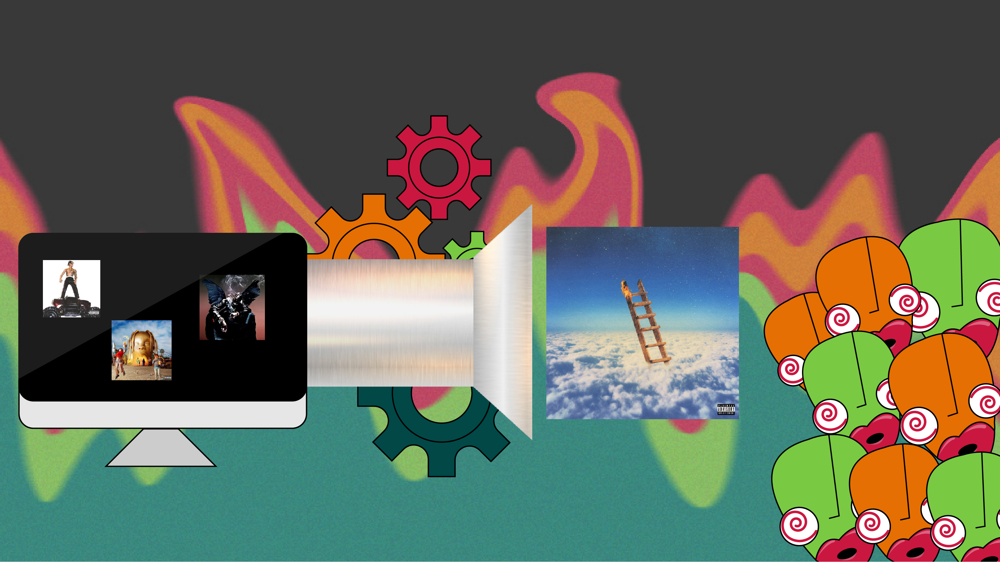
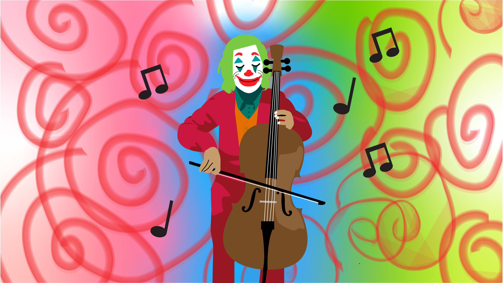
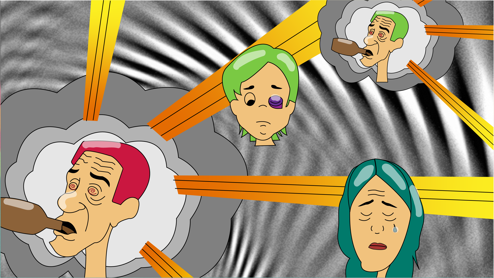

August 21, 2018
Project 4: Infographic Timeline

This is a timeline on one of my favorite bands, MGMT. My design was inspired by their psychedelic and electric sound.
Bibliography:
Cole, Rachel. MGMT. (2008). Interview, 38(8), 112. Retrieved from https://search-ebscohost-com.proxy.binghamton.edu/login.aspx?direct=true&db=f5h&AN=34483699&site=ehost-live
Greene, Andy. (2018). MGMT’s Pop Adventure. Rolling Stone, (1306/1307), 15. Retrieved from https://search-ebscohost-com.proxy.binghamton.edu/login.aspx?direct=true&db=f5h&AN=127489924&site=ehost-live
Grigoriadis, V. (2010). MGMT. Rolling Stone, (1103), 66. Retrieved from https://search-ebscohost-com.proxy.binghamton.edu/login.aspx?direct=true&db=f5h&AN=49724102&site=ehost-live
Mason, S. (2019). MGMT: Biography & History. Retrieved December 5, 2019, from https://www.allmusic.com/artist/mgmt-mn0000536321/biography.
August 21, 2018
Project 3: Article Illustrations

Travis Scott's 'Highest In The Room' Doesn't Reach New Heights
This article focused on Travis Scott's new single, "Highest In The Room". The article argues that Scott's sound hasn't evolved in years and instead, Scott uses the same recipe to make songs that appeal to the masses. The author mentions that the single sounds as if you told an AI to make a Travis Scott song. Therefore, I illustrated a computer with 3 of Scott's album covers and then a gear system and funnel so it looks like the computer is synthesizing his albums to produce his new single. At the other end, I illustrated people with spiral eyes as if they are being hypnotized by the catchy tune.

Composer Hildur Guðnadóttir Finds The Humanity In 'Joker'
This article focused on the music in the new movie, "The Joker". The author interviews the woman who composed a lot of this moving music. The composer, Guðnadóttir, explained how she wanted to inspire empathy in the Joker even though he is a dark character. Guðnadóttir thought it was important that the Joker have a softer side and she brought this out with her music. For my illustration I made the Joker as the one who was playing the cello, with a soft smile on his face. I tried to make him look as unthreatening as possible and I added to this even more with the colorful background.

The Lumineers Trace The Cycle Of Addiction: 'It's A Progressive Disease'
My last article was about The Lumineer's latest album, "III". This article is in the form of an interview with the band where they talk about the message behind their album. They explain that their album is about addiction and specifically, is a story about how addiction progresses across three generations. In one part of the interview, the band explains addiction as a "radial bomb" where over years and years, it continuously effects their loved ones. I decided to use this part of the article,as well as another part about addiction having a cartoonish nature, to develop my illustration. I made cartoon-like people and then had the addict act like bomb, reaching and effecting his surrouning loved ones. Then I showed this pattern repeat in his son's future.
August 21, 2018
Project 2: Scalable Icons

For this project I made 3 different icons representing different aspects of myself. They are meant to be used at multiple scales so I made one version at 128x128px, another 64x64px and the last 32x32px. My first icon is a mushroom because I like eating mushrooms but also because I think that mushrooms can represent nature and I really enjoy being outside. My second icon is a person waving their arms to music. This represents my love for music and going to concerts. My last icon is an aviator jacket. This represents how much I love clothes and fashion.
August 21, 2018
Project 1: Avatar

This is an avatar I created of myself. It was made on an isometric grid in Adobe Illustrator. My avatar has AirPods and music notes above her head because I love music. I also live off of coffee which is why she's holding a coffee cup.